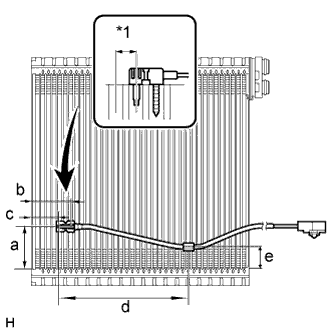

ПЕРЕДНИЙ КОНДИЦИОНЕР ВОЗДУХА > ПОВТОРНАЯ СБОРКА |
| 1. УСТАНОВИТЕ ТЕРМИСТОР КОНДИЦИОНЕРА № 1 |
|  |
Вставьте датчик в месте, на 1 ребро смещенном вправо или влево относительно предыдущего положения.
| Участок | Заданные условия |
| a | 50 мм (1,97 дюйма) |
| b | 46,7 мм (1,84 дюйма) |
| c | 33,3 мм (1,31 дюйма) |
| d | 154,1 мм (6,07 дюйма) |
| e | 25 мм (0,98 дюйма) |
| *1 | 1 ребро |
| 2. УСТАНОВИТЕ ИСПАРИТЕЛЬ СИСТЕМЫ КОНДИЦИОНИРОВАНИЯ № 1 В СБОРЕ |
Нанесите необходимое количество компрессорного масла на 2 новых кольцевых уплотнения и пригоночную поверхность трубного соединения.
Установите 2 кольцевых уплотнения на испаритель.
Установите испаритель.
Введите в зацепление 4 захвата и установите корпус блока.
Заверните 6 винтов.
| 3. УСТАНОВИТЕ СЕРВОПРИВОД ЛЕВОЙ ЗАСЛОНКИ В СБОРЕ |
Совместите канавки на сервоприводе заслонки с выступами на блоке и установите сервопривод заслонки.
| *A | для автоматического кондиционера | - | - |
| *a | Со стороны кондиционера | *b | Со стороны сервопривода заслонки |
Заверните 4 винта.
| 4. УСТАНОВИТЕ СЕРВОПРИВОД ЗАСЛОНКИ В СБОРЕ Правая сторона |
Совместите канавки на сервоприводе заслонки с выступами на блоке и установите сервопривод заслонки.
| *a | Со стороны кондиционера | *b | Со стороны сервопривода заслонки |
Заверните 3 винта.
| 5. УСТАНОВИТЕ КЛАПАН КОМПЕНСАЦИИ РАСШИРЕНИЯ СИСТЕМЫ КОНДИЦИОНИРОВАНИЯ |
Установите клапан компенсации расширения.
| 6. УСТАНОВИТЕ ТРУБКУ И ОБВЯЗКУ СИСТЕМЫ КОНДИЦИОНИРОВАНИЯ |
Нанесите необходимое количество компрессорного масла на 2 новых кольцевых уплотнения и пригоночную поверхность трубного соединения.
Установите 2 кольцевых уплотнения на трубку и обвязку системы кондиционирования.
С помощью шестигранного ключа на 4 мм вверните 2 болта.
Наложите новую бутиловую ленту.
Установите новое уплотнение.
| 7. УСТАНОВИТЕ ЖГУТ ПРОВОДОВ СИСТЕМЫ КОНДИЦИОНИРОВАНИЯ |
Установите жгут проводов и закрепите его зажимами.
Подсоедините разъемы.
| 8. УСТАНОВИТЕ БЛОК РАДИАТОРА ОТОПИТЕЛЯ |
Установите блок радиатора отопителя.
Установите 2 кронштейна радиатора и закрепите их 2 винтами.
| 9. УСТАНОВИТЕ УСТРОЙСТВО БЫСТРОГО ПОДОГРЕВА В СБОРЕ (для моделей с подогревателем PTC) |
Введите в зацепление 2 зажима, чтобы установить устройство быстрого подогрева.
Заверните 2 винта.
| 10. УСТАНОВИТЕ СЛИВНОЙ ШЛАНГ КОНДИЦИОНЕРА |
 |
Установите сливной шланг кондиционера.
| 11. УСТАНОВИТЕ ШЛАНГ АСПИРАТОРА |
Введите в зацепление 2 захвата, чтобы закрепить шланг аспиратора.
| 12. УСТАНОВИТЕ СОПЛО ОТТАИВАТЕЛЯ В СБОРЕ |
Установите нижнее сопло оттаивателя, закрепив его 6 захвата.
| 13. УСТАНОВИТЕ ВЕНТИЛЯТОР В СБОРЕ |
Введите в зацепление 2 захвата, чтобы закрепить вентилятор.
Подсоедините разъем и зажим.
Заверните винт.